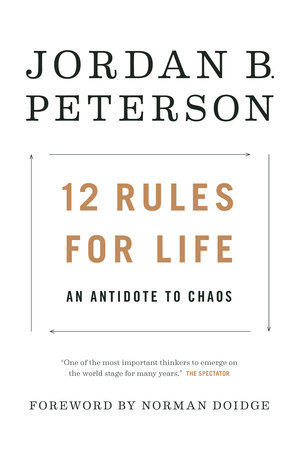

"12 Rules for Life: An Antidote to Chaos"
- Read on 2018-03-19
- Rating: ️️️️️
- Format: üéß (15 hours 40 minutes)
I read this on recommendation from a friend, and I'm glad I did. The points are clearly laid out, and obviously extremely well thought-through. More than one of the "rules" of life are, for me, life-changing - a true shift in my paradigm. They were well-timed in my life, so even more poignant. The only downside to the book, I thought, was just how well organized the rules were. Each of them were laid out in such a way that if you somehow didn't follow the author's train of thought, there may be a chance you wouldn't be able to get back on that proverbial train. That happened to me more than once. Unfortunately, there was one point I never could fully grasp. Heavy stuff. Worth it.
- Prior: The Name of the Wind
- Next: The Wise Man's Fear
- Read on 2018-10-30
- Rating: ️️️️️
- Format: üéß (15 hours 40 minutes)
Second Review
I read this in connection with a book club, since I was curous to hear the thoughts of others. I'm glad I could get some additional perspective on some of the points. While I've tempered my view on the book, and acknowledge some of the opposing views, I'm not sure it's worth the negative attention it gets. At the same time, I'm also not very active in the areas where this book gets attention one way or another.
- Prior: The Wise Man's Fear
- Next: Harry Potter and the Deathly Hallows